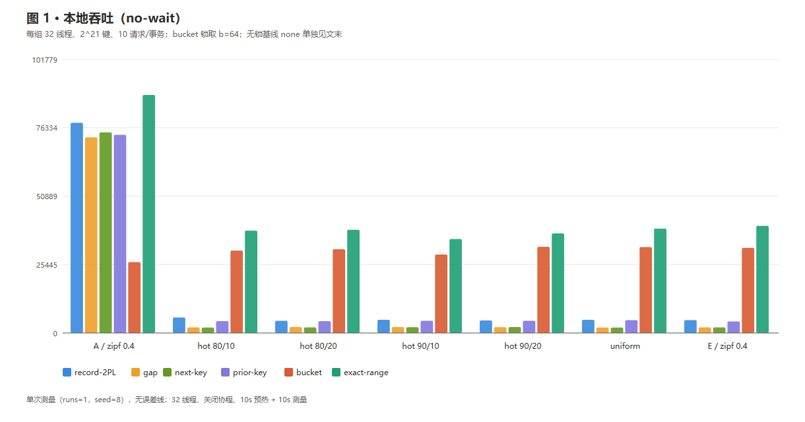
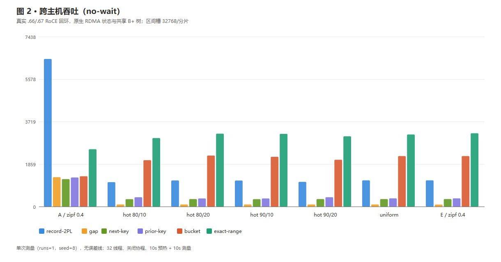
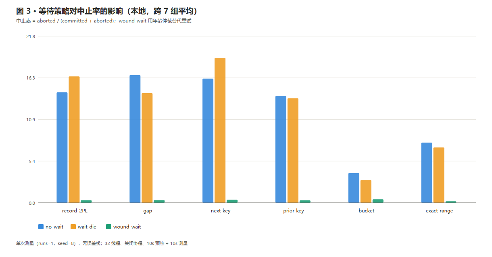
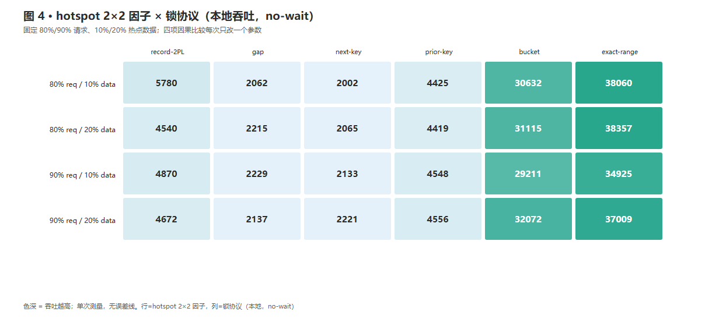
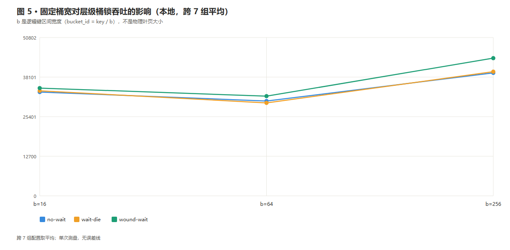
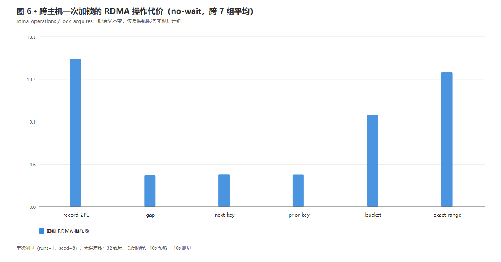

repetition_policy=single-run 单次测量，无误差线、不得宣称置信区间。HEAD 2017493；32 OS 线程、execution_mode=threads、coroutines=1；2^21 键域；10 请求/事务；10s 全并发预热 + 10s 测量；seed=8；本地 6 协议 + none 基线，跨主机 6 协议；三种等待策略 no-wait / wait-die / wound-wait；层级桶锁三档 b=16/64/256。每份配置本地 25 + 跨主机 24 = 49 主 case，本轮 7×49 = 343 个主 case 全部落盘，7 组 rc=0、failed_cases=0。
图中吞吐对比固定 wait_policy=no-wait、层级锁取 b=64；无锁基线 none 因量级差异过大未画入柱状图（A 组本地约 307 903 txn/s）。
每组 32 线程、2^21 键、10 请求/事务；bucket 锁取 b=64；无锁基线 none 单独见文末

真实 .66/.67 RoCE 回环，原生 RDMA 状态与共享 B+ 树；区间槽 32768/分片

跨 7 组平均

四个热点配置齐备

三档 × 三策略

锁服务实现层代价

来源：.66:~/RdmaRangeLock/experiments/results/formal-shared-data-{local,cross-host}-20261107-*.csv，本地副本在 data/。生成脚本 plot_stage.py。